Shared
Approved application · approved logoEvery image below is an actual canonical PNG. Open an image for its full resolution. These are authored design scenes, not current-app browser captures.
Mobile header · focus
mobile-header-focusActions and implementation pointers
+ New page · Journal · Explore · All pages · ⌄ · Reflections · › · Reading · Close · Ask Journl · Today’s Journal · Instant · Thinking
apps/web/src/app/(app)/@header/default.tsxapps/web/src/app/(app)/@header/_components/app-header.tsxapps/web/src/components/ui/sidebar.tsx

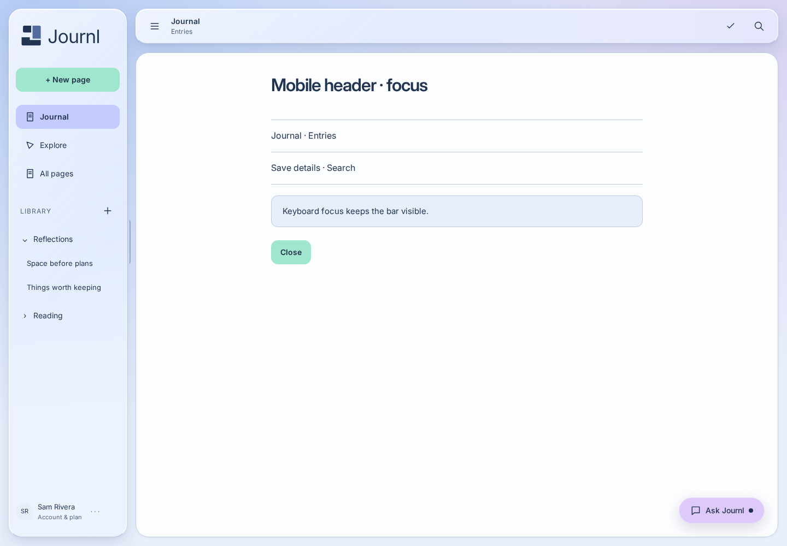
SHA256 f115a3f98c482a52da0f0b11f2131d81aa7ab693f29ec1d30f16f7c19af73998

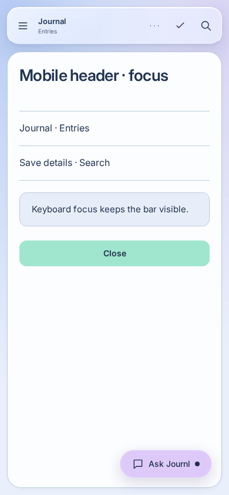
SHA256 4a871b5a82b69be3199099b20a59adb4c814680409bd931f963179ec71976fb3

SHA256 395c122840bb22730f5da3b5578616b68755b54f7977218e859fe7d2c0ab5c43

SHA256 4289d404c637d742bfc9181443b322ff54abca39497b3744d19929787345750a
Mobile header · recovery
mobile-header-recoveryActions and implementation pointers
+ New page · Journal · Explore · All pages · ⌄ · Reflections · › · Reading · Review drafts · Ask Journl · Today’s Journal · Close · Instant · Thinking
apps/web/src/app/(app)/@header/default.tsxapps/web/src/app/(app)/@header/_components/app-header.tsxapps/web/src/components/ui/sidebar.tsx

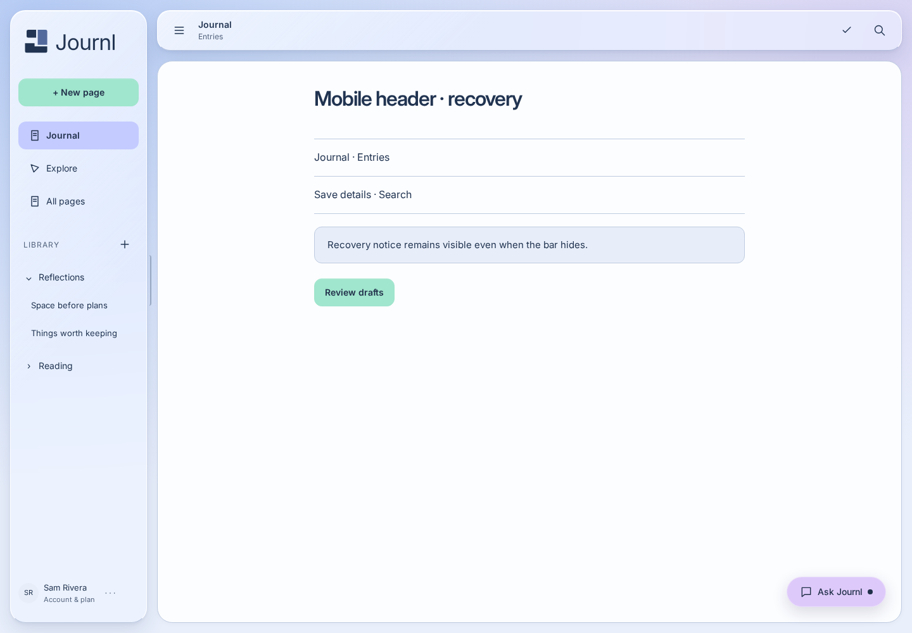
SHA256 8c66b2ce4dbdcfde536dc9ceae8d5d1b27740ed4b7920adec8fb3386d19b183e

SHA256 468c0388d41b0f83b9e4656320c178475023ecb25c19ea81f8fc0a81e56f9e02

SHA256 ece0b18bcaf892e1e6d879742749046265d285b94fe51cc7ab901b9bfa5dc3ac

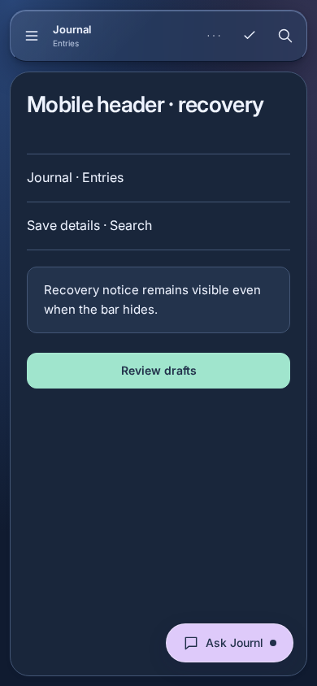
SHA256 0ff4e81f0e399601dbd9f28e4cec56eaafcaeae2c10c55b06a2da285d1f865aa
Compact navigation
navigation-compactActions and implementation pointers
+ New page · Journal · Explore · All pages · ⌄ · Reflections · › · Reading · Expand navigation · Library · Account & plan · Ask Journl · Today’s Journal · Close · Instant · Thinking
apps/web/src/app/(app)/@header/default.tsxapps/web/src/app/(app)/@header/_components/app-header.tsxapps/web/src/components/ui/sidebar.tsx

SHA256 a663267d0d9d0d5bec5f71a0b1c87ddc1efd1f28462949e305bdc10027d5abe9

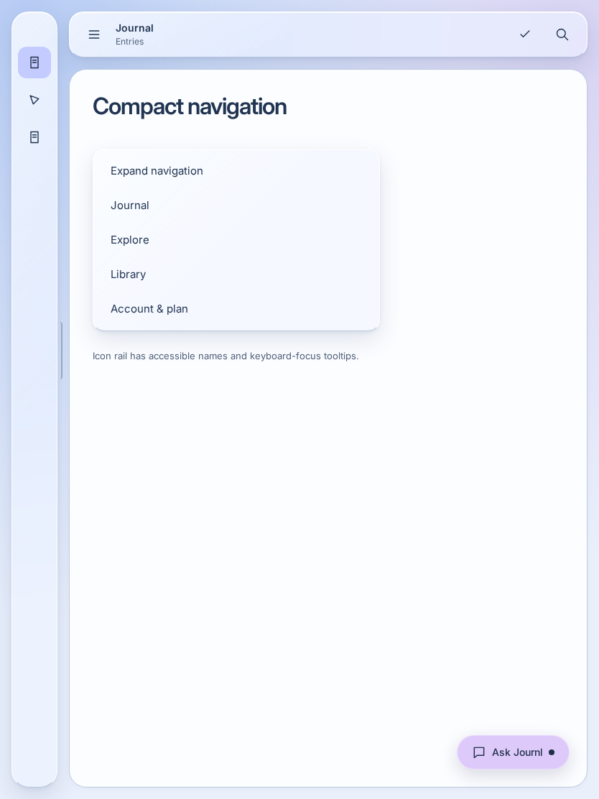
SHA256 84fdad4621d5e32aa8cc875da94f4c7207ba41dd424ea1b36d6ae105a1a32b6a

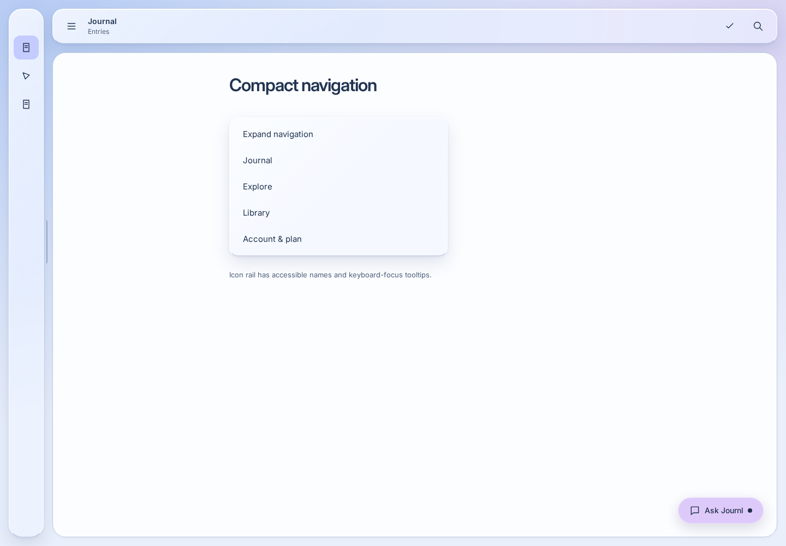
SHA256 90084f9ccbf305f45a7d26c1aa5d73391545c2ba4ebe5b7e4fb1bf6b9e0441e3

SHA256 e85555725873b88f63ce59492554b5c87cf853ae6f752c294873b6f66a38615b

SHA256 fefbee13e8071cd718f7852b65afc6b339fff9aa473dea7f69eb4b77cdf0ff21

SHA256 95edf86be0102cee3232d3a297050f9704e3156ac5bc30a7ea859e9438a45ff8
Notebook navigation
navigation-mobileActions and implementation pointers
× · + New page · Journal · Explore · All pages · ⌄ · Reflections · › · Reading
apps/web/src/app/(app)/@header/default.tsxapps/web/src/app/(app)/@header/_components/app-header.tsxapps/web/src/components/ui/sidebar.tsx

SHA256 015d973d040975aeef2df76a0ef3f5d2fae96bcd608132e80469d002b43249b1

SHA256 675eb53b7513bbfaddac45ee310be39a720387491b5bf2552f40e8fb2667c7f5

SHA256 f104378c65ae1cd2c39da378b3140846cdcea63f8921acc78629dd93cd27c180

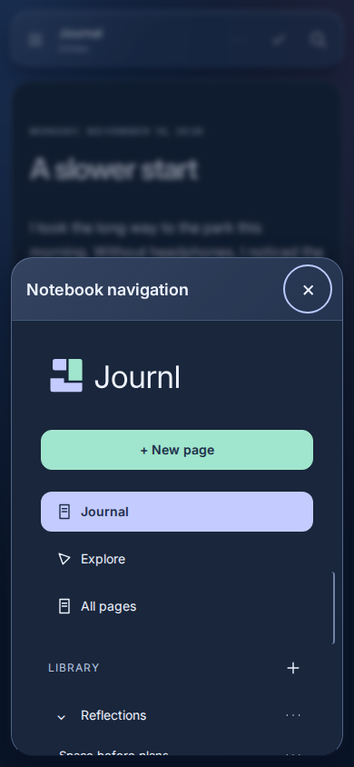
SHA256 98f8c1c63cb9daf5493a33c68dbc7c3fdbc0f8e7aade593f68196474aa7a34c4

SHA256 ba97c3eef044b7cdba643ca7a924616e4e15ba86d87c3cab67a61a381cfb5548

SHA256 4cfa4e655277ef0ddd7f404023a03b9dc50316b808bfca53a9a83090975f5d44
Resize either sidebar
resize-boundariesActions and implementation pointers
+ New page · Journal · Explore · All pages · ⌄ · Reflections · › · Reading · Ask Journl · Today’s Journal · Close · Instant · Thinking
apps/web/src/app/(app)/@header/default.tsxapps/web/src/app/(app)/@header/_components/app-header.tsxapps/web/src/components/ui/sidebar.tsx

SHA256 6561f0aedf5e02c1cf4d13671f28857592c54624d0bf2a300d030742ba8d87fd

SHA256 edbfd2865da5d2785f99d0c65a956fb2bf22331cb3baa54129ea496de678720e

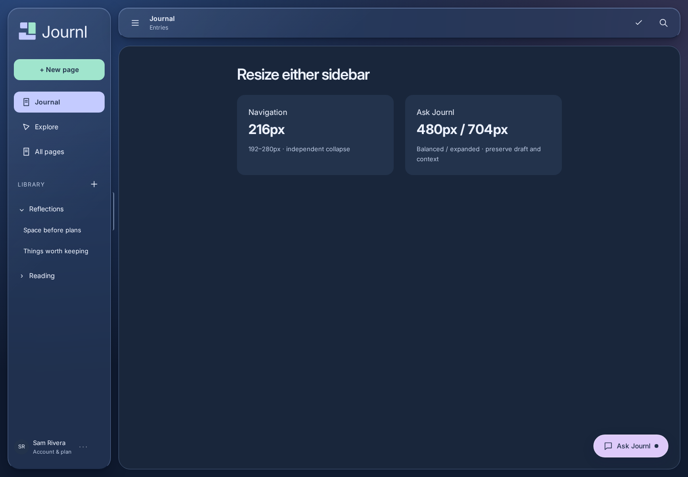
SHA256 4caa18e3a4619f6cd206a13d2e3f8c878bc1abfe6b415cb552aa6bf45bd754bc

SHA256 1513368847f1e1ac2643f58f5ced818bdbb626fd1d003057fc39e0d9e09fb2cd
Keyboard focus
focus-ringActions and implementation pointers
+ New page · Journal · Explore · All pages · ⌄ · Reflections · › · Reading · Search notebook · Ask Journl · Today’s Journal · Close · Instant · Thinking
apps/web/src/app/(app)/@header/default.tsxapps/web/src/app/(app)/@header/_components/app-header.tsxapps/web/src/components/ui/sidebar.tsx

SHA256 c1a66e5bd37f124dce8f118d2e4ecbbbfd7df85a9dcae5eafba176fe5b8f4d07

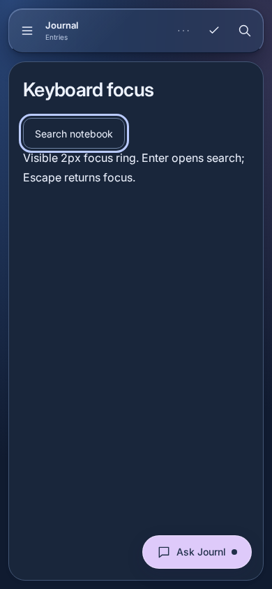
SHA256 e1c206537928b364d62eb97b54ebc7e6fa223d8eb9dd6950e1e03ecb4bcb9f25

SHA256 3fceb3f35854fe6aecf07a347c7e3b6ff0cf9d3b2a69a067f27941db1a19cb67

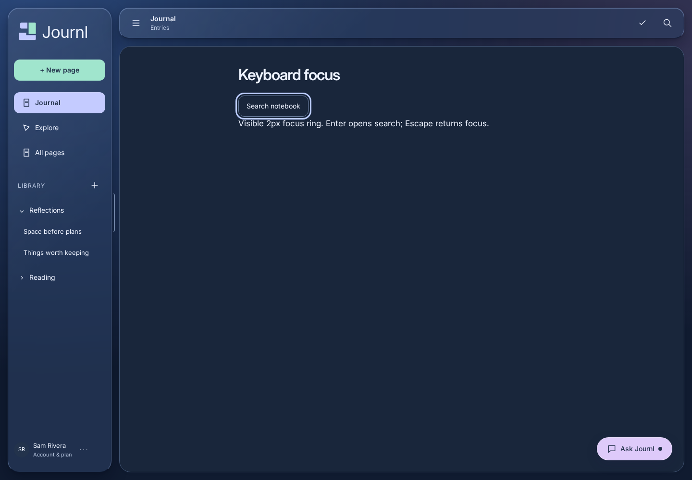
SHA256 7bb5b81edeb3aeb1bef077281c1f8097d64e90275d1a91781e291020b5a24247
A contained decision
modal-focusActions and implementation pointers
× · Cancel · Save
apps/web/src/app/(app)/@header/default.tsxapps/web/src/app/(app)/@header/_components/app-header.tsxapps/web/src/components/ui/sidebar.tsx

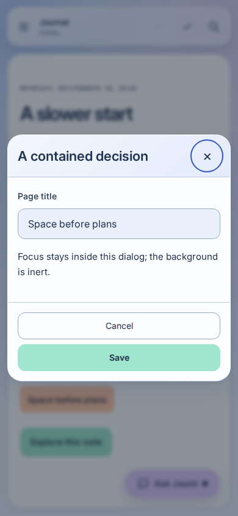
SHA256 2740084d165a6675ca5978cb904f8556e5bcb7aa36372284987b7679ba25a300

SHA256 9d31b62c8b4e5a8ced7f3e30e8011eb249ed8fd5642bd9171b0ac2efd8b2aefd

SHA256 64a460f4bd31247f9f07062055d71780eff555a0215d0c2550969c6cde8bdf85

SHA256 1c6addca19542cad5387994df2c257bf77227d21e2d0e88e9f28b8021dde3378
Long names remain readable
long-textActions and implementation pointers
+ New page · Journal · Explore · All pages · ⌄ · Reflections · › · Reading · Open full title · Ask Journl · Today’s Journal · Close · Instant · Thinking
apps/web/src/app/(app)/@header/default.tsxapps/web/src/app/(app)/@header/_components/app-header.tsxapps/web/src/components/ui/sidebar.tsx

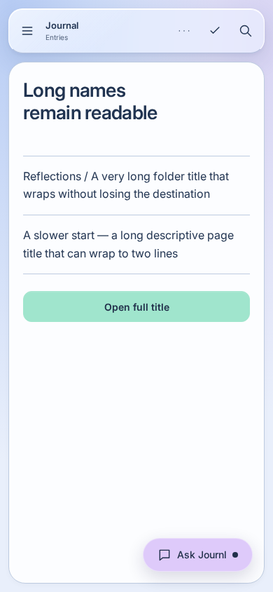
SHA256 3373d38c41356e98b19ced85e1c1954ca8f23974455c5ee1eed2a043d14b890d

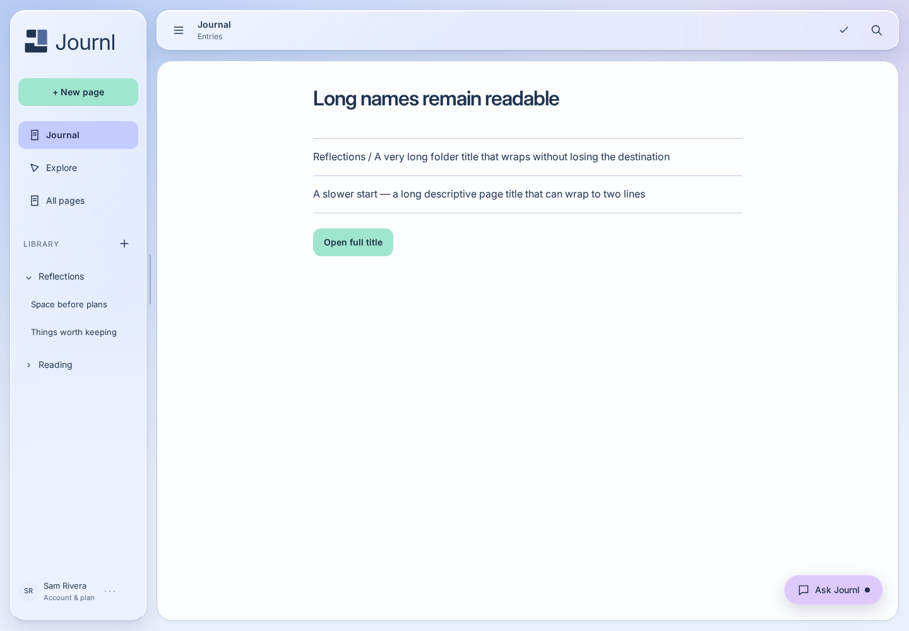
SHA256 b6638b248b42c3d0ea69062ba093665ca82eeb277b9a844502a93eb8ee7e3b44

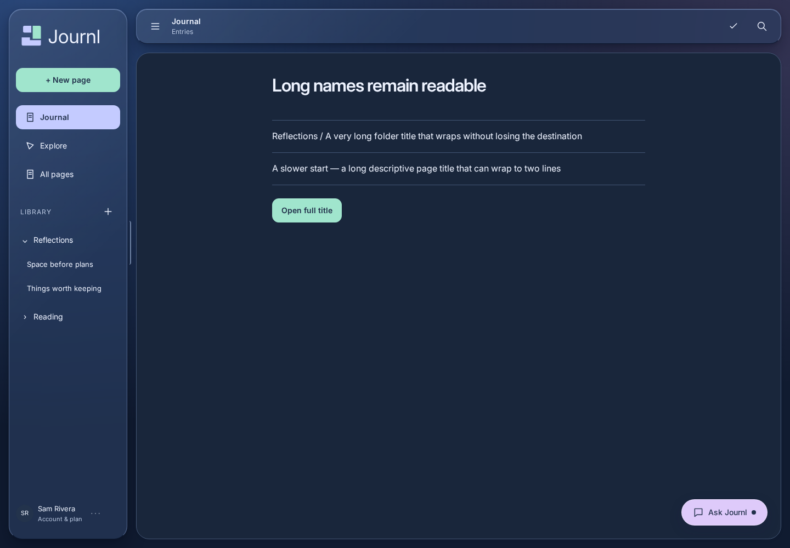
SHA256 faf238f4bfdb9f1047a4f493aa2613ca9174c9c0027f95e6aa22d03e38ccef2f

SHA256 1cdc6fa967d64d05483c437a8262eeea93bf8983470e6e3145d9044252226e10
Action could not complete
toast-errorActions and implementation pointers
+ New page · Journal · Explore · All pages · ⌄ · Reflections · › · Reading · Dismiss · Try again · Ask Journl · Today’s Journal · Close · Instant · Thinking
apps/web/src/app/(app)/@header/default.tsxapps/web/src/app/(app)/@header/_components/app-header.tsxapps/web/src/components/ui/sidebar.tsx

SHA256 d92d22f0dedf1f4314eed703e335196b1d7537710790d8a62fcaca6c031d082a

SHA256 fa099e2c814d879c895aba60e2ed4ee838cc7d568ccb0b58dec991e3a49d7400

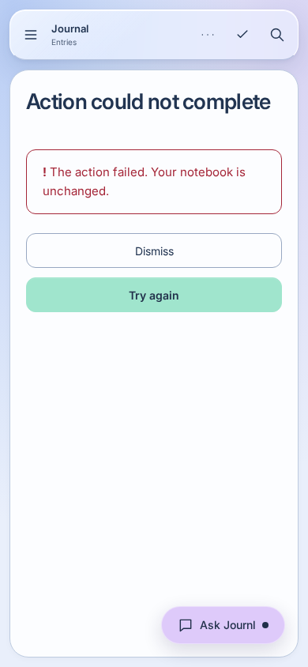
SHA256 6efc950c9b69c397defd8d6b3d0bc4315de5883a2bf240297a8c22acbee6f91b

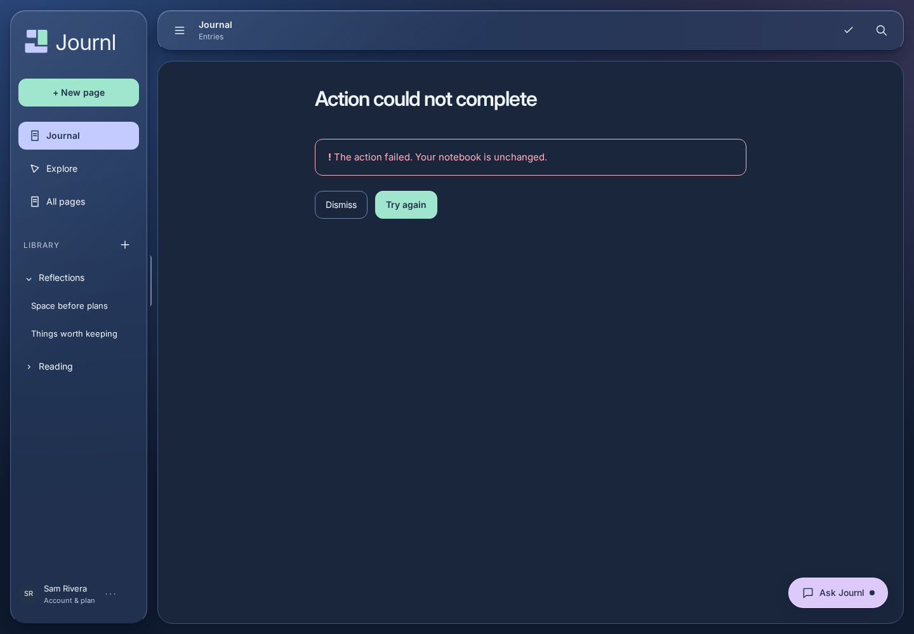
SHA256 58b3289de3072489c366b9433ae5137a444e0db59ba5c65dd29b267de8fdce8e
Opening your note
progressActions and implementation pointers
+ New page · Journal · Explore · All pages · ⌄ · Reflections · › · Reading · Ask Journl · Today’s Journal · Close · Instant · Thinking
apps/web/src/app/(app)/@header/default.tsxapps/web/src/app/(app)/@header/_components/app-header.tsxapps/web/src/components/ui/sidebar.tsx

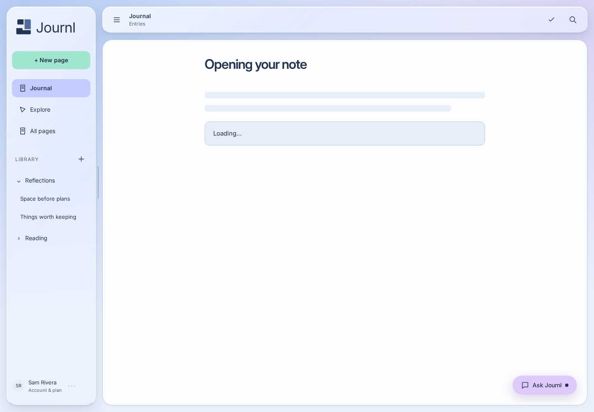
SHA256 303a39c7496e2ff3133e27a8daba9e91ac1a8282793907fe0753bb2ee4466c0f

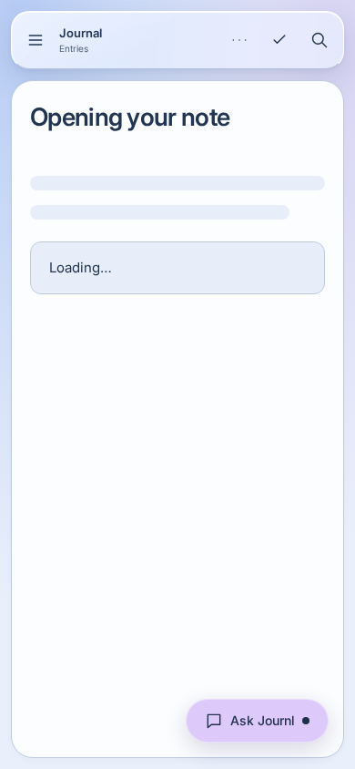
SHA256 d2f958ace5aad32e16f03b46e6e7e9cf48b399a63a808a965b440d1cff051946

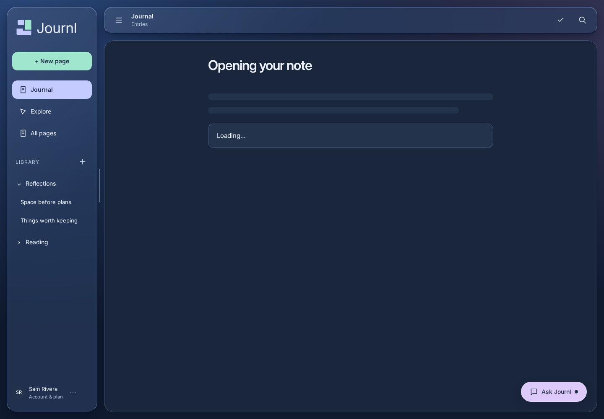
SHA256 6b90053b5c06bca82d4abc09a133e3c563341104a6caa4c8df63440b70916bfc

SHA256 e28930f82c62123e465c194c1540bf4307447b7c701fe24211b82a54bd7f7ba6